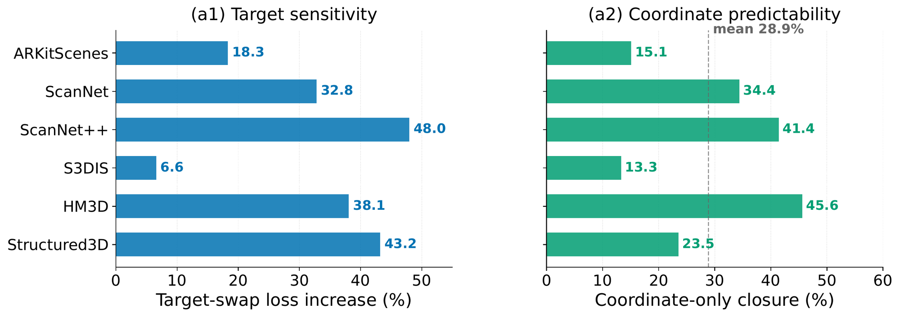
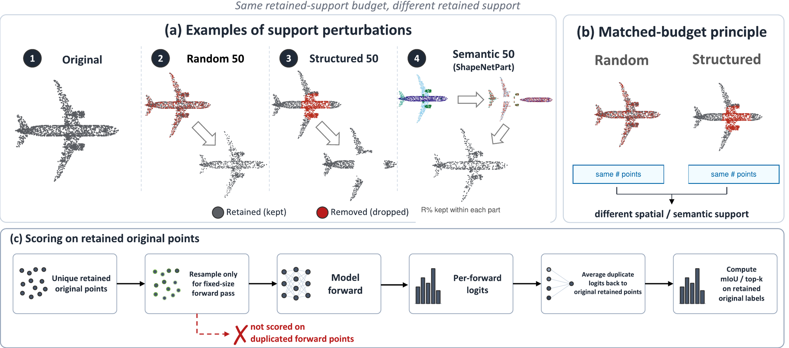
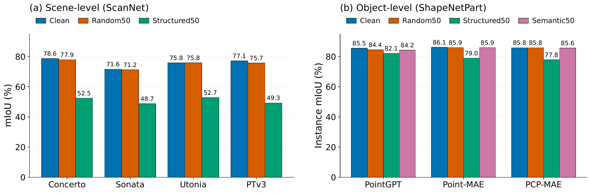
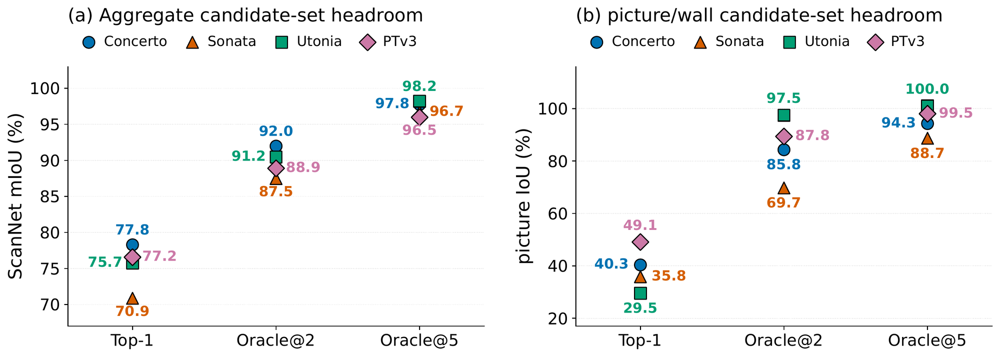

1AIST · 2University of Tsukuba · 3Fundamental AI Lab, University of Technology Nuremberg · 4CADDi · 5Visual Geometry Group, University of Oxford
Downstream scores are the standard evidence for progress in point-cloud self-supervised learning (SSL). But a score is not a mechanism: it does not explain why a representation improves. We ask three simple questions about the evaluation pipeline: what signal is learned, what geometry is visible, and what the score measures. These questions test whether a gain comes from the pretext objective, from the geometric support available in the input, or from the downstream readout itself. Applied to cross-modal alignment, autoregressive prediction, and masked autoencoding, our diagnostics reveal that downstream scores often fail to identify the source of a gain. For Concerto, coordinate-only signals explain 28.9% of the pretext-loss response but recover only 6.9% of the downstream gain on ScanNet, separating pretext-loss explanation from representation transfer. For masked autoencoding, removing spatially coherent regions hurts much more than removing the same number of random points, showing that the visible geometry, not just the retained fraction, drives the score. For PointGPT, relaxing mask and order assumptions lowers downstream scores by at most 2.78 points on ScanObjectNN and 0.22 points on ShapeNetPart, showing that high scores can persist after weakening the intended autoregressive mechanism. These findings caution against treating downstream gains as self-evident representation progress in point-cloud SSL. We propose a diagnostic protocol that asks not only whether a score improves, but why it improves.
In point-cloud SSL, a model is pretrained without labels and then evaluated on benchmarks such as ScanNet scene segmentation, ScanObjectNN classification and ShapeNetPart part segmentation. A higher score on these benchmarks is usually read as a sign that the new pretraining idea worked. We test that reading at three stages, with models from three objective families (cross-modal alignment, autoregressive prediction and masked autoencoding) and a supervised reference.
Did the model need the signal the pretext task targets?
A pretext task is designed to make the representation rely on one signal. In point clouds, coordinates, patch centers and token order are part of the input, and they can lower the same pretext loss without that signal. For masked autoencoding, prior work (PCP-MAE) showed that Point-MAE rebuilds a shape from the centers of the masked patches alone, even when every patch is masked. We test the same question for cross-modal alignment and autoregressive prediction.
Concerto trains point features to match image features. Swapping in mismatched image targets raises the pretext loss (a1). A control that predicts the image features from xyz coordinates alone reproduces part of that increase, 28.9% on average over six indoor datasets (a2).

Does the coordinate-predictable part carry over to the representation? We continued pretraining Concerto with the coordinate-MLP prediction as the target and linear-probed it on ScanNet. It recovers only 6.9% of the gap between the cross-modal target and no image encoder.
| Continuation target | ScanNet linear-probe mIoU | Gap recovery |
|---|---|---|
| Cross-modal (Concerto) | 47.94 | 100% |
| Coordinate-MLP | 40.64 | 6.9% |
| No image encoder | 40.10 | 0% (reference) |
PointGPT predicts patches one by one, like a language model predicts tokens. Its design adds a spatial patch order and a dual mask that hides some earlier patches. We trained variants without the dual mask, with a randomized patch order, or both (the causal attention mask is kept in all of them). Each variant lowers its own pretext loss by at least 88.7%, and the downstream scores stay close to the reference.
| Dual mask | Patch order | Pretext loss ↓ (%) | obj_bg | obj_only | PB_T50_RS | ShapeNetPart |
|---|---|---|---|---|---|---|
| on | spatial | – | 90.36 | 90.53 | 86.68 | 85.66 |
| off | spatial | 90.66 | 89.21 | 89.38 | 84.19 | 85.60 |
| off | random | 89.02 | 90.53 | 88.30 | 83.97 | 85.55 |
| on | random | 88.72 | 90.02 | 87.95 | 83.90 | 85.44 |
ScanObjectNN top-1 accuracy (%) on its three variants and ShapeNetPart instance mIoU (%). Pretext loss ↓: decrease from the first to the final checkpoint of each run. The largest drops are 2.78 points (PB_T50_RS) and 0.22 points (ShapeNetPart).
A high downstream score does not show that the model needed the signal its pretext task was designed around.
What geometry does the model see when points are removed?
Robustness to missing points is usually tested by dropping points at random. What remains still covers the whole shape. Real scans lose points differently, through occlusion, sensor range and viewpoint, so whole regions go missing. We compare removals that keep the same number of points but different geometry.


For Concerto on ScanNet, random removal moves mIoU from 78.6 to 77.9, while structured removal takes it to 52.5. Structured removal can also change which model looks more robust. On clean input, supervised PTv3 (77.1) is above Utonia (75.8). Under Structured50, Utonia (52.7) is above PTv3 (49.3).
The score depends on which geometry remains, not only on how many points remain. Random removal alone is a weak test of robustness to missing regions.
What does the reported number measure, and what does it leave out?
Top-1 mIoU counts only the first prediction for each point. If the correct class is the second prediction, the point counts as wrong, the same as a far miss. Oracle@k counts a point as correct when the ground-truth class is among the top k predictions. It is a diagnostic of how close the right class was, not a prediction method.

| Model | Top-1 mIoU | Best post-hoc readout | Oracle@2 mIoU |
|---|---|---|---|
| Concerto | 77.78 | 77.80 | 91.97 |
| Sonata | 70.86 | 71.03 | 87.47 |
| Utonia | 75.73 | 75.74 | 91.16 |
| PTv3 (supervised) | 77.16 | 77.29 | 88.89 |
Best post-hoc readout: the best of the readouts refit on the same frozen features.
Oracle@2 is 11.7 to 16.6 points above top-1 for every model, and readouts refit on the same features stay within 0.2 points of top-1. The two scores can also rank models differently. Utonia is below PTv3 on top-1 and above it on Oracle@2. In 3D scene benchmarks the label itself can also be wrong (the ScanNet validation set has been fully relabeled to correct noisy labels), so a top-1 error alone does not show whether the representation, the readout or the label is at fault.
The standard ScanObjectNN protocol selects the checkpoint on the test split. A separate run that holds out part of the training set for selection reports PointGPT at 87.3% on obj_only instead of 91.2%.
| Model | Selection | obj_bg | obj_only | PB_T50_RS |
|---|---|---|---|---|
| PointGPT | test split (standard) | 90.02 | 91.22 | 86.09 |
| held-out | 89.85 | 87.26 | 85.67 | |
| Point-MAE | test split (standard) | 89.33 | 86.75 | 84.80 |
| held-out | 85.89 | 86.40 | 83.10 | |
| PCP-MAE | test split (standard) | 94.49 | 93.29 | 89.52 |
| held-out | 92.77 | 92.25 | 88.86 |
ScanObjectNN top-1 accuracy (%).
A reported score is not determined by the representation alone. The readout, the labels and the selection protocol enter the same number.
The evidence needed to interpret a gain depends on the claim being made. We recommend that a report
For each claim, the evidence can then be reported as supported or not supported under the tested controls, unresolved, or not evaluated.
Scope: indoor scenes and ShapeNet objects. Contrastive point-cloud SSL, outdoor LiDAR and dynamic scenes are left for future work.
@inproceedings{ide2026whatscoresmiss,
title = {What Downstream Scores Miss in Point-Cloud Self-Supervised Learning},
author = {Ide, Kohsuke and Yamada, Ryousuke and Qiu, Yue and Fukuhara, Yoshihiro
and Kataoka, Hirokatsu and Asano, Yuki M. and Satoh, Yutaka},
booktitle = {Advances in Neural Information Processing Systems (NeurIPS),
Evaluations and Datasets Track},
year = {2026}
}